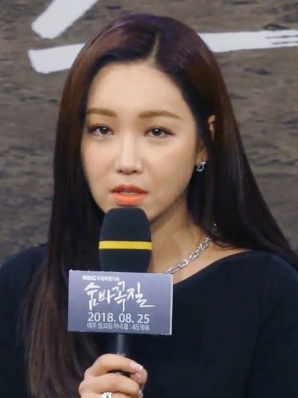
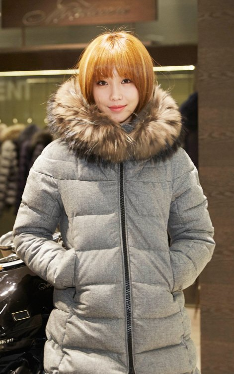

사귀지도 않는 사람에게 "결혼하고 싶다"고 먼저 말할 수 있을까요. 배우 이유리가 그랬어요. 12살 연상 목사 남편과 결혼한 지 16년 차인 이유리가 그 시작을 털어놓은 거예요. 흩어진 발언을 시간 순서대로 다시 맞춰 봤어요.
📷 사진 1 자리
▲ 배우 이유리 / 사진: 뉴스인스타 / CC BY 3.0 / 위키미디어 공용
어느 방송에서 나온 이야기인가
11월 12일 방송된 KBS2 '신상출시 편스토랑'이에요. 이유리가 후배 배우 박하나를 집에 불러 결혼 이야기를 나누던 장면이었어요.
대화는 "누가 먼저 결혼하자고 했나"로 흘렀어요. 박하나는 남편 김태술을 처음 만났을 때부터 결혼 상대로 괜찮다고 생각했고, 정신 차려 보니 식장을 보고 있었다고 답했죠. 이어 이유리가 자기 이야기를 꺼냈어요.
고백에서 결혼까지 다섯 단계
발언을 순서대로 놓으면 이렇게 돼요.
▶ 영상 1 자리
1. 혼자 고민한 시간: 나이 차이가 있으니 연애보다 결혼을 해야 할 사람이라고 혼자 결론을 냈다고 해요. 상대는 아무 생각도 없던 때였어요.
2. 그네 위의 고백: 놀이터에서 그네를 타다 먼저 "결혼하고 싶다"고 말했어요. 둘은 그때 사귀는 사이도 아니었어요.
3. 돌려보낸 남편: 남편은 깜짝 놀라 이유리를 진정시키고 돌려보냈어요. 본인은 "무슨 자신감인지 모르겠다"며 웃었고요.
4. 유예 기간과 1년 연애: 나이 차이 때문에 장난이면 안 된다며 남편이 시간을 줬고, 마음이 그대로라는 걸 확인한 뒤 약 1년을 만났어요.
5. 2010년 결혼: 그리고 올해로 결혼 16년 차가 됐어요.
정리해 보면 고백은 빨랐지만 결혼은 서두르지 않은 셈이에요. 3번과 4번 사이, 남편이 바로 답하지 않고 시간을 둔 대목이 이 이야기의 중심이죠.
장보리의 연민정, 지금은 예능에서
이유리는 2001년 KBS 드라마 '학교 4'로 얼굴을 알렸어요. 가장 많이 기억되는 역할은 2014년 MBC '왔다! 장보리'의 악역 연민정이에요. 강한 악역 이미지와 '그네 고백'의 거리가 꽤 멀어서 더 눈에 띄는 이야기예요.
📷 사진 2 자리
▲ 2014년의 이유리 / 사진: lansmere / CC BY 4.0 / 위키미디어 공용
요즘은 '편스토랑'에 나와 집과 일상을 보여 주고 있어요. 같은 회차에서는 에이티즈 멤버 산을 향한 팬심도 드러냈어요. 결혼 이야기만 궁금하다면 KBS 공식 클립으로 그 장면만 볼 수 있어요.
정리하면서 가장 눈에 띈 건 먼저 고백한 이유리보다, 바로 답하지 않고 기다린 남편 쪽이었어요. '사귀기 전 청혼'이라는 제목만 보면 즉흥적인 이야기 같지만, 순서대로 놓으면 1년의 시간을 거친 결혼이에요.
이유리는 사귀기 전에 먼저 결혼을 말했고, 남편은 시간을 둔 뒤 약 1년 연애를 거쳐 2010년에 결혼했어요. 해당 장면은 11월 12일 방송된 KBS2 '신상출시 편스토랑'과 KBS Entertain 유튜브 클립에서 볼 수 있어요.

